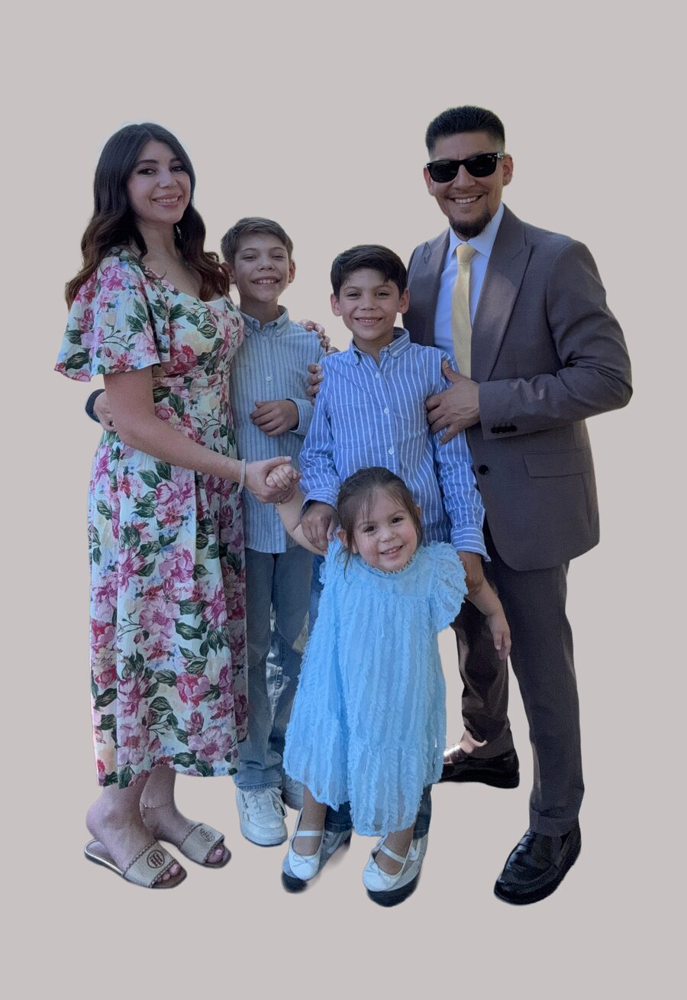

Senior Pastors
Pastors Manny and Melissa Gonzalez, along with their three children, are the Senior Pastors of Refuge City Church. Their greatest passion is to see people encounter the life-changing presence of Jesus Christ and discover the hope, healing, and purpose found in Him.
With a heart for the next generation, Manny and Melissa are committed to building a church where every generation belongs. They believe the Church is strongest when the wisdom of those who have gone before is joined with the passion and faith of the next generation. Their desire is to see families restored, disciples equipped, and believers empowered to live out their God-given calling.
Refuge City Church was planted with a vision to be a place of refuge—a safe place where people from every walk of life can experience authentic community, passionate worship, biblical teaching, and the transforming power of the Holy Spirit. Together, Pastors Manny and Melissa are dedicated to serving the Antelope Valley by loving people, investing in the community, and raising up leaders who will impact generations to come.
Whether you’re exploring faith for the first time or looking for a church to call home, they would love to welcome you to the Refuge City family.